Retete
Retete obtinute
-
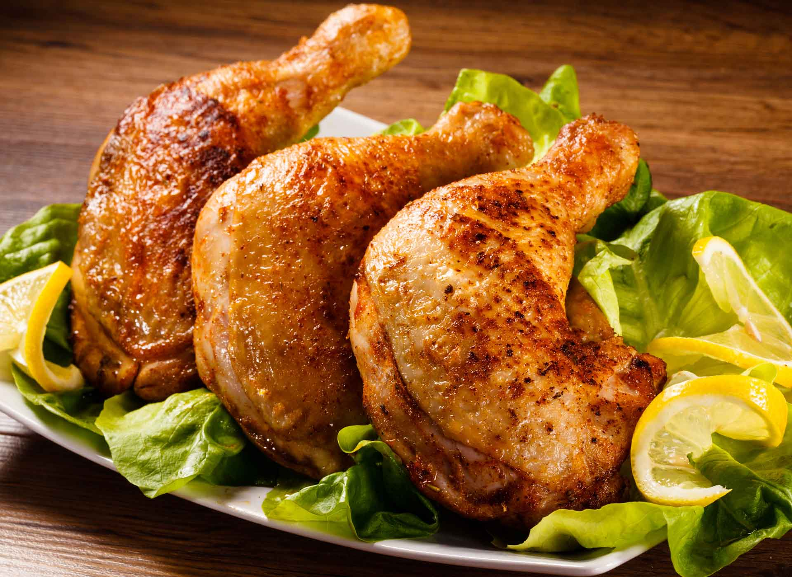
Friptura de pui la cuptor -
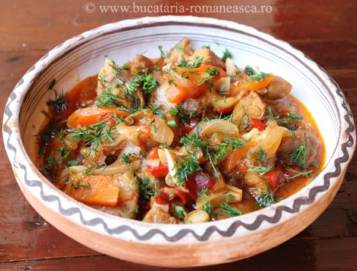
Tocanita Taraneasca -
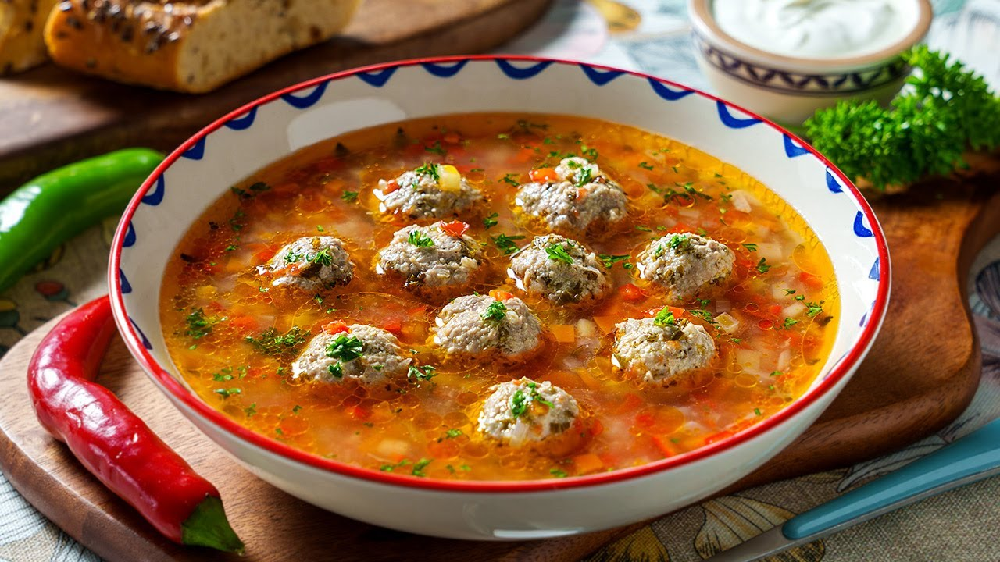
Ciorba de perisoare -
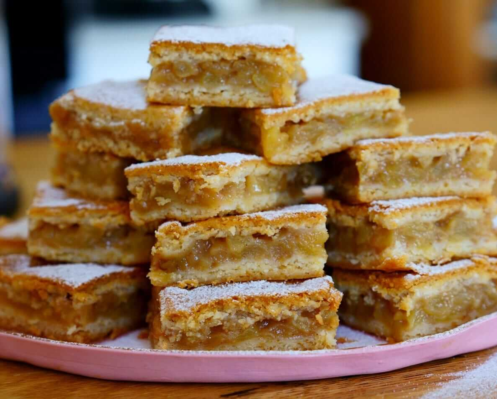
Placinta cu mere -
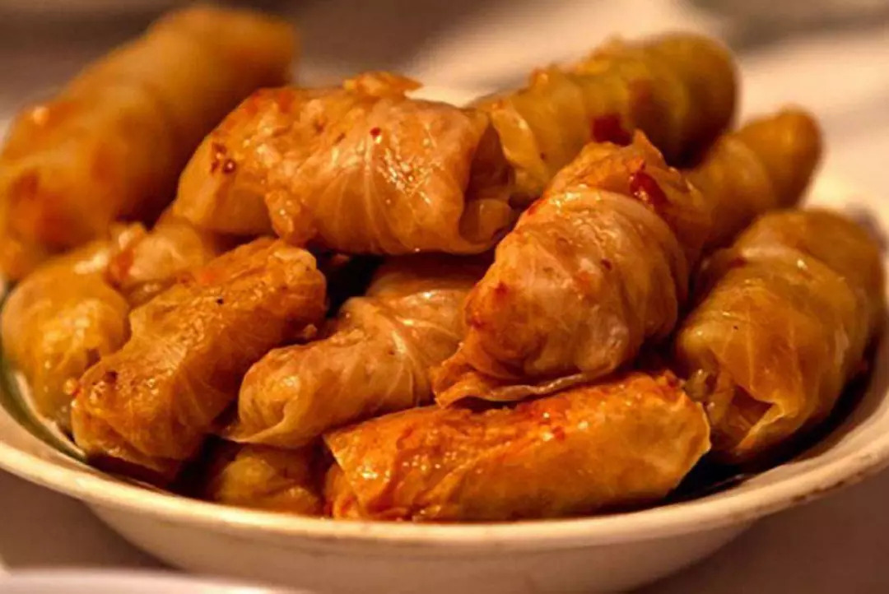
Sarmale -
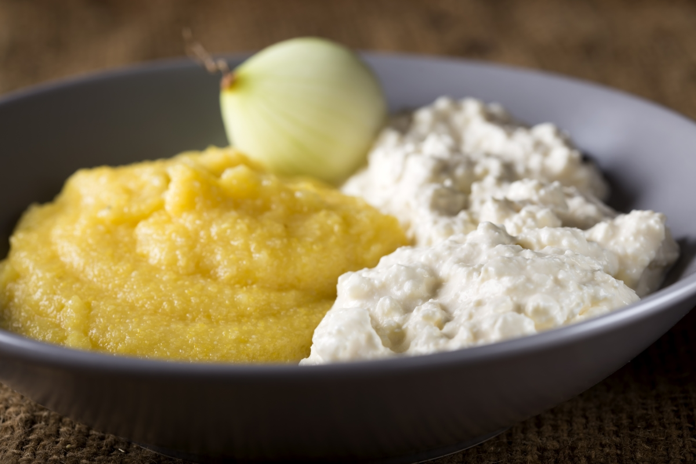
Mamaliga cu branza si smantana
Retete vegetariene
-
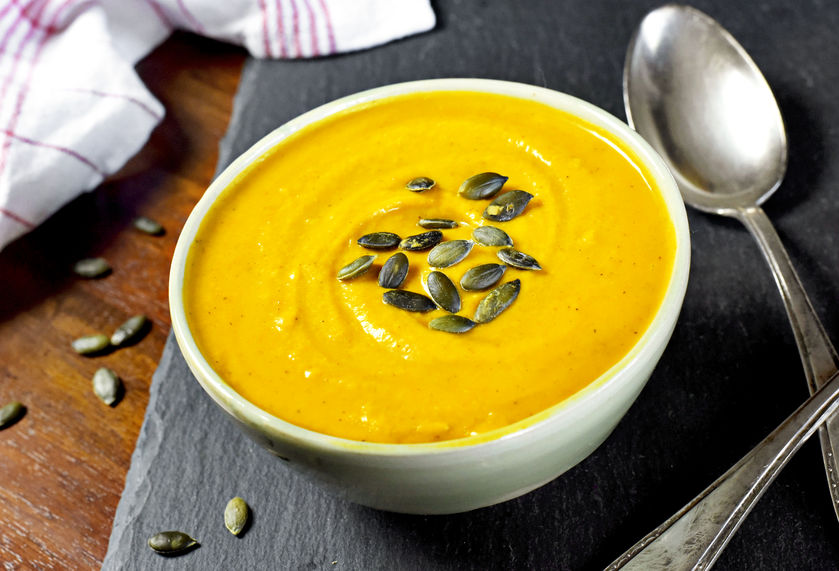
Supa crema de dovleac -
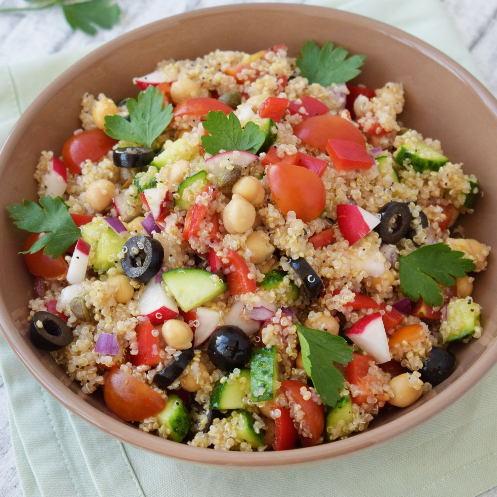
Salata de quinoa cu legume -
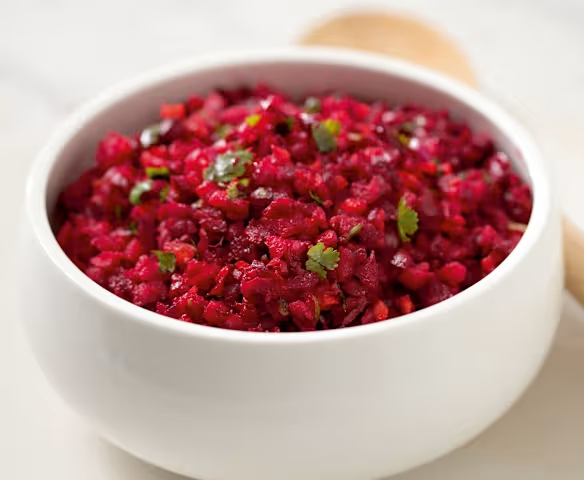
Salata de sfecla rosie -
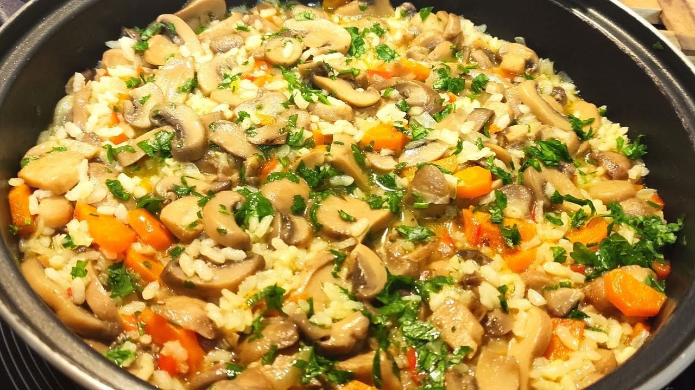
Pilaf cu ciuperci -
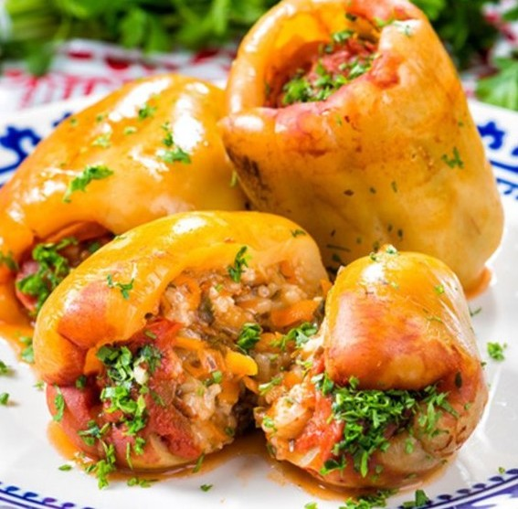
Ardei umpluti cu legume -
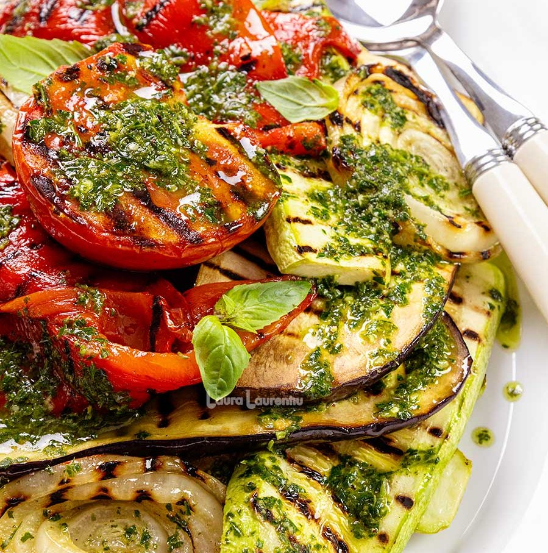
Legume la gratar